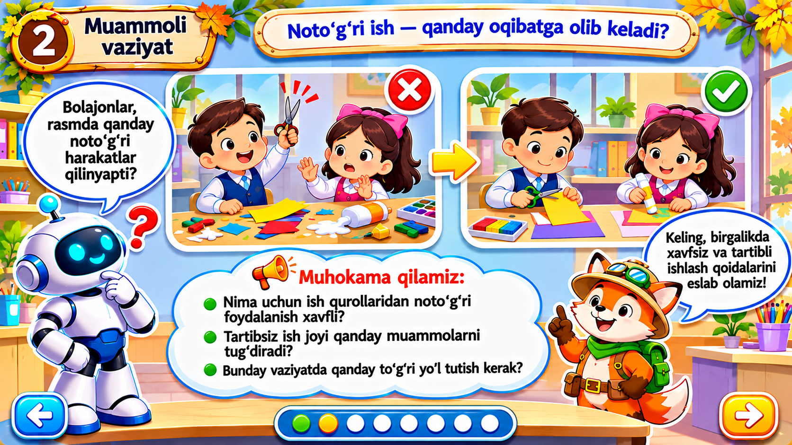
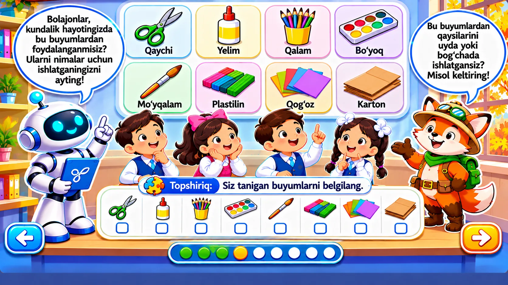
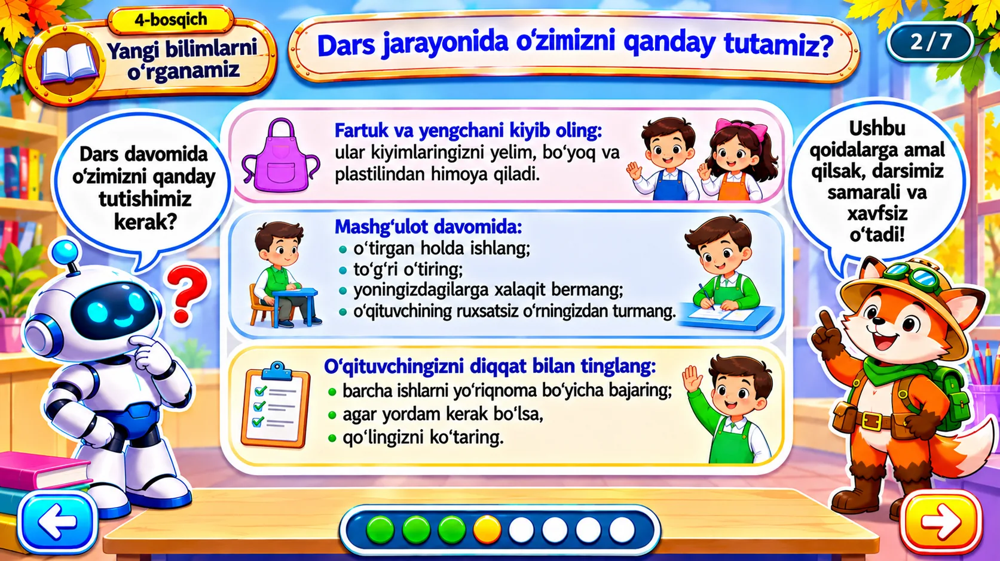
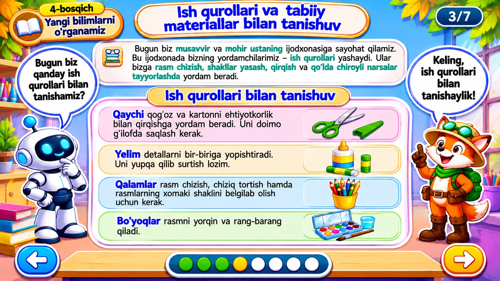
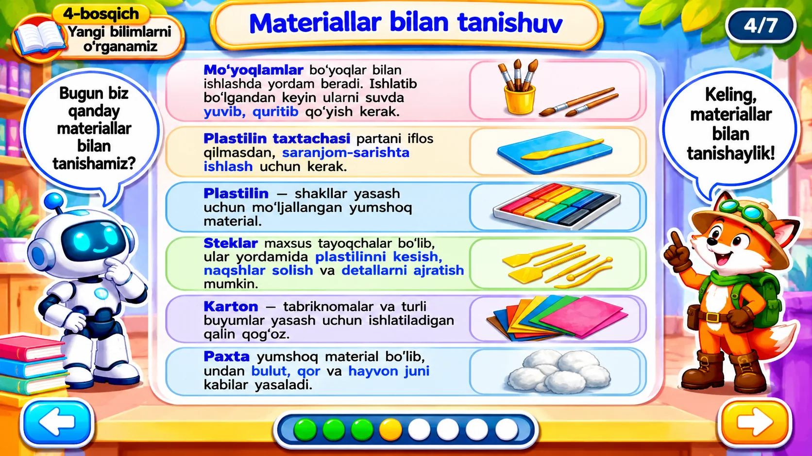
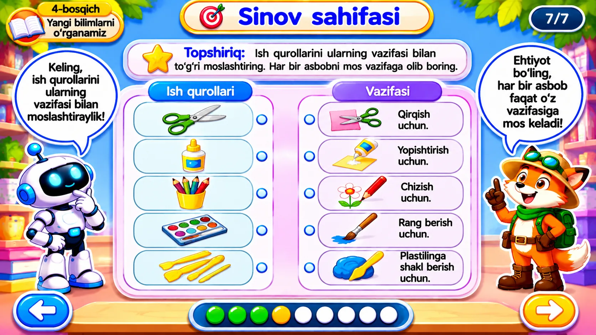
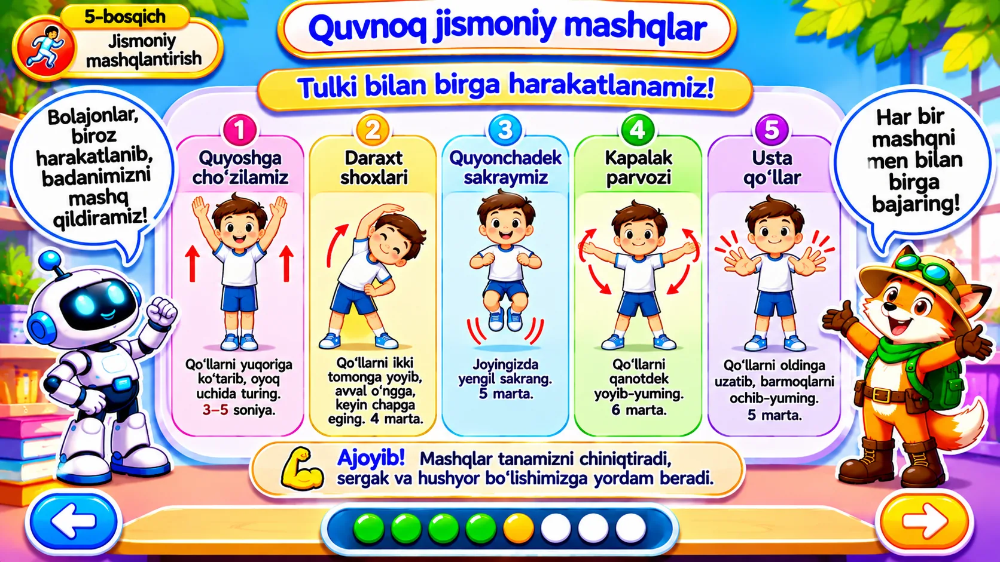
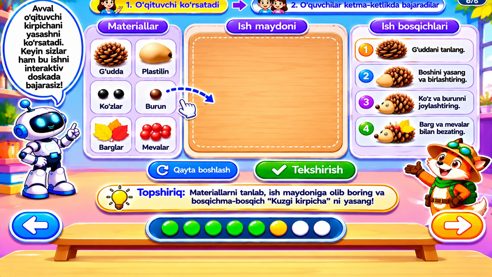
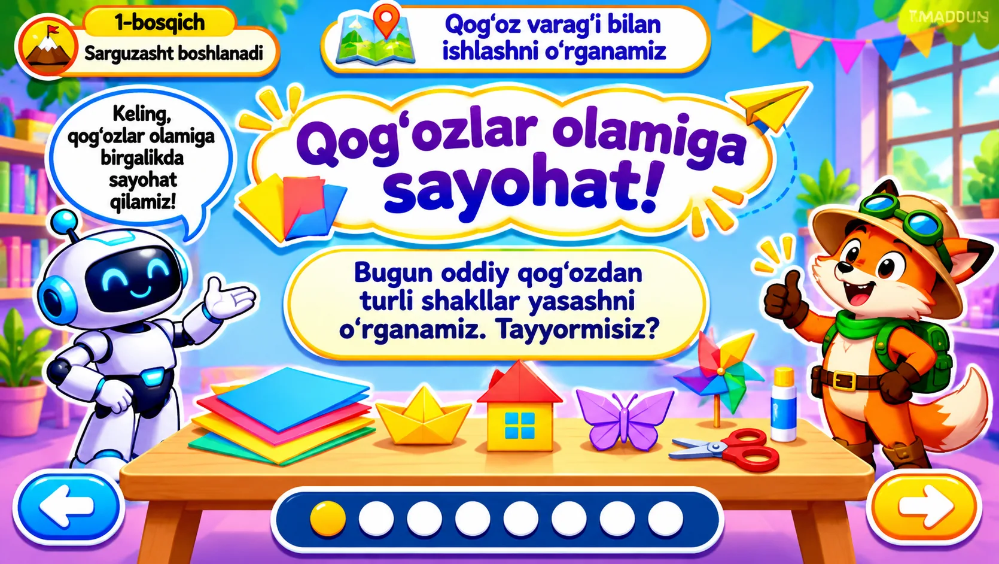
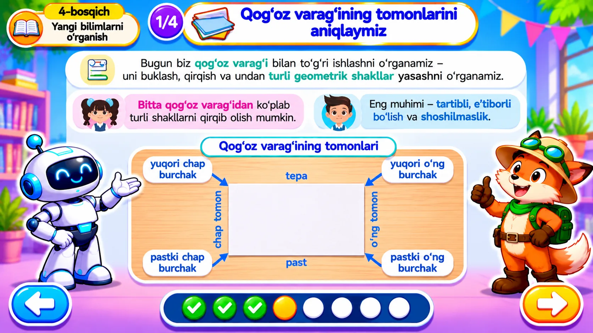

Davom etish uchun xaritadagi chorak nomini bosing.

Avval sinfni, keyin o‘rganmoqchi bo‘lgan fanni tanlang.
Davom etish uchun xaritadagi chorak nomini bosing.

Ikki holatni solishtiring. Qaysi biri xavfsiz?

Buyum kartochkasini bosing yoki pastda o‘zingiz tanigan buyumlarni belgilang.

Ish o‘rnini tayyorlash qoidalarini bosib, bajarganlaringizni belgilang.

Har bir qoidani o‘qing va bosib belgilang.

Har bir ish qurolini bosib, u bilan tanishganingizni belgilang.

Har bir materialni bosib, u bilan tanishganingizni belgilang.

Xavfsizlik qoidalarini va tabiiy materiallarni bosib belgilang.

Tayyorlash bosqichlarini tartib bilan bosing, so‘ng o‘zingizni baholang.

Ish qurolining yonidagi doirachadan ushlab, mos vazifaga surib olib boring.

Mashq kartochkasini bosing va tulki bilan birga sanab bajaring!

Materialni ushlab, ish maydoniga surib olib boring. 1-qadam: g‘uddani tanlang.
 ★
★
★
★
★
★
«Aylantirish» tugmasini bosing yoki barabanning o‘zini bosing!

O‘zingizni baholang: medallardan birini tanlang. So‘ng bugun o‘rganganlaringizni belgilang.

Stol ustidagi qog‘oz buyumlarni bosib, ular bilan tanishing!

Shakllarni bosib nomini bilib oling. So‘ng savollar ustida o‘ylab, ularni belgilang.

Sehrli xaltani bosing: chiqqan buyumni mos guruhga surib olib boring. «Savol–javob» uchun o‘ngdagi oynani bosing.

Yozuvlarni yoki qog‘ozning chetlarini bosing — tomon va burchaklar yonib ko‘rinadi. So‘ng «🎯 Topib ko‘r!» tugmasini bosing!
 1
2
3
4
5
6
1
2
3
4
5
6
Qadamlarni to‘g‘ri tartibda bosing: avval nima qilinadi? 1-qadamdan boshlang!